Appel
à projet AEROSAT 2013 – Région Midi-Pyrénées
Appel
à projet AEROSAT 2013 – Région Midi-Pyrénées
COCOON
« COuChes amOrtissantes pour la prOtectioN de pièces composites de formes complexes »
-----------------------------------------------------------------------------------------------------
Présentation synthétique du projet
COCOON est un projet collaboratif coordonné par la société ATECA, et impliquant 5 partenaires :
- 2 PME de la Région Midi-Pyrénées : ATECA et CDETECH
- 1 laboratoire de recherche de la Région Midi-Pyrénées : l’ICA
- 1 centre de recherches industrielles et techniques de la Région Midi-Pyrénées : le CRITT M&C
- La société SKF Aerospace
Pour la réalisation de ce projet, les partenaires appartenant à la région ont fait l’objet d’un support financier de la Région Midi-Pyrénées dans le cadre de l’appel à projet AEROSAT 2013.
L’objectif de ce projet est la poursuite du développement d’un concept de couche amortissante pour protection de pièces composites. Ce concept a fait l’objet d’un brevet, déposé par ATECA et Conseil & Technique en avril 2008 (n° 2 930 478), et propriété de SKF Aerospace depuis Juin 2010.
Ce concept a déjà connu des améliorations au travers de projets communs entre ATECA, Conseil & Technique, CRITT M&C, ICA et SKF Aerospace, et les objectifs précis du projet COCOON sont :
- Amener la couche amortissante à un niveau de maturité équivalent au TRL 5
- Développer une méthode de fabrication plus industrielle de ce produit
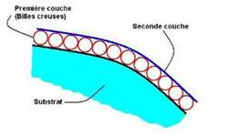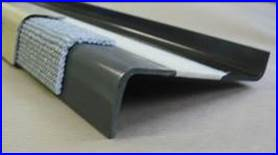
-----------------------------------------------------------------------------------------------------
Enjeux technologiques et scientifiques
- Enjeux technologiques :
o La réalisation de pièces en forme représentatives
o La définition d’outils de dimensionnement
o La prise en compte des effets d’installation
o Des tests d’impact sur des pièces réelles
- Verrous technologiques :
o La réalisation de pièces à iso-caractéristiques en termes d’absorption d’énergie
- Allégement de la couche amortissante à iso-performances
- Travaux sur la peau extérieure et sur la composition des sphères creuses
- Autres pistes à explorer…
- Le process de fabrication
o Le développement d’un outil numérique de pré-dimensionnement de la couche amortissante
- Enjeux scientifiques :
o Compréhension des mécanismes d’absorption d’énergie
-----------------------------------------------------------------------------------------------------
Work Packages :
- Lot 1 Management du projet (ATECA)
- Lot 2 Analyse du besoin (SKF Aerospace)
o Spécifications
o Evaluation des solutions
- Lot 3 Conception & fabrication (ATECA + CRITT M&C)
o Dimensionnement des éprouvettes
o Fabrication des éprouvettes
o Industrialisation du process de fabrication
- Lot 4 Conception et fabrication (ICA + CEDETECH)
o Essais d’impact
o Modélisation
o Vieillissement des éprouvettes
o Contrôle US
-----------------------------------------------------------------------------------------------------
Présentation des partenaires
ATECA est une société créée en 1981, principalement active dans le domaine aéronautique.
Elle emploie aujourd’hui plus de 20 personnes, au sein de deux départements :
- Procédés Spéciaux
o Traitement Thermique
o Brasage
o Laser 5 axes
- Matériaux et Systèmes Avancés
o Matériaux poreux : sphères creuses et fibres métalliques
o Systèmes absorbeurs d’énergie
Une activité R&D existe au sein de l’entreprise depuis 1985, dans le domaine de la fabrication de sphères creuses pour des applications structurelles et des absorbeurs d’énergie (choc, acoustique, vibratoire).
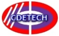
CDETECH est un centre d'expertise technique composé de 2 laboratoires d'essais en physique et environnement, pour les secteurs de l’aéronautique, de l’automobile, du ferroviaire, du spatial et d’autres industries.
Le laboratoire réalise des essais de qualifications/validations, contrôles et expertises sur des composants : électriques, électroniques, connecteurs, câbles, sertissages, faisceaux, systèmes embarqués, ensemble ou sous-ensemble,… dans différents domaines d'activités : Mécanique, Thermique, Electrique, Climatique, Métrologie, Vieillissement, Etanchéité, Corrosion, Fluides, Vibration et choc, Métallographie…
Le CRITT Mécanique & Composites est un service de l’Université Paul SABATIER (Toulouse III) adossé à l’Institut Clément Ader.
Certifié Centre de Ressources Technologiques par le Ministère de la Recherche, il a pour missions l’aide à l’innovation et le transfert de technologie dans les domaines de la mécanique industrielle et des matériaux composites : conception et réalisation de prototypes, calcul de structures, caractérisation de matériaux, essais, contrôles non destructifs, fabrication de pièces composites.
Certifié ISO 9001 version 2008 par l’AFAQ-AFNOR pour l’ensemble de ses activités, il est un partenaire scientifique et technique idéal pour les PME-PMI. Il est constitué d’une équipe de permanents, ingénieurs et techniciens, et bénéficie de l’expertise des enseignants chercheurs des structures partenaires. Ses potentiels humains et matériels en font un centre reconnu par les industriels.
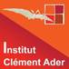 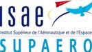
L'Institut Clément Ader est un jeune laboratoire de recherche(1) qui
œuvre principalement dans le domaine de la Mécanique du Solide, les sous
domaines les plus représentatifs étant ceux des Matériaux, des Structures, des
Systèmes, des Procédés et de la Mesure. Les applications visées sont
principalement celles des secteurs de l’aéronautique et du spatial, mais
également du transport et de l'énergie, plus généralement ceux des industries
mécaniques. Ses activités sont centrées sur la modélisation du comportement des
matériaux et des structures, et l'étude de leur durabilité. Il s'attache à
couvrir à la fois, dans un juste équilibre, les approches théoriques,
numériques et expérimentales. Une part importante de ses recherches est
relative aux matériaux composites qui sont aujourd'hui incontournables dans le
secteur aérospatial.
(1) L'ICA est issu, le 30 juin 2009, du rapprochement de trois structures de recherche en Midi-Pyrénées: le Centre de Recherche Outillages, Matériaux et Procédés de l'ENSTIMAC (CROMeP), le Département Mécanique Structures et Matériaux de l'ISAE (DMSM) et le Laboratoire de Génie Mécanique de Toulouse de l'INSA et de l'UPS (LGMT).
SKF Aerospace appartient au groupe SKF. La société développe et fabrique des produits liés au secteur aéronautique :
- Fabrication de roulements à billes, à rouleaux et d’articulations pour applications aéronautiques :
o Commandes de vol
o Train d’atterrissage
o Attaches moteur
o Voilure
- Conception, fabrication et qualification de solutions composite pour :
o Renforts structuraux
o Commandes de vol
o Racing
-----------------------------------------------------------------------------------------------------
Réunions du consortium
29-01-2014 : Kick-off meeting (ATECA)
24-09-2014 : Réunion d’avancement à T0+6 (CRITT M&C)
12-02-2015 : Réunion d’avancement à T0+12 (CRITT M&C)
25-01-2016 : Réunion d’avancement technique (CRITT M&C)
20-06-2016 : Réunion finale (ATECA)
-----------------------------------------------------------------------------------------------------
Quelques résultats des travaux de l’ICA en cours
Essais d’impact sur plaque composite + couche amortissante plane
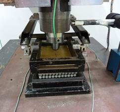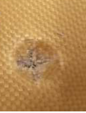
Impact sur plaque composite + couche amortissante : montage (gauche) et endommagement de la peau (droite)
Essais d’impact sur tube + couche amortissante mise en forme (demi-coque)
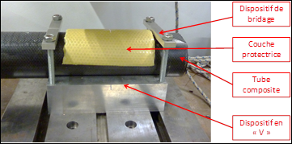
Montage d’impact pour tube composite + couche amortissante en demi-coque
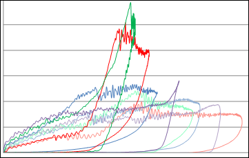
Courbes force/déplacement des essais d’impact sur tube + couche amortissante en demi-coque pour différentes configurations de couches amortissantes
Modélisation numérique de la couche amortissante
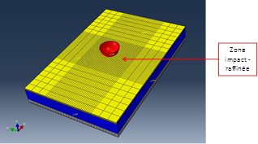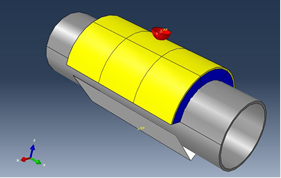
Modèle Abaqus : Couche amortissante sur plaque composite (gauche) et sur tube composite (droite)
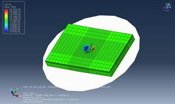
Résultat de simulation Abaqus : endommagement de la peau supérieure de la couche amortissante